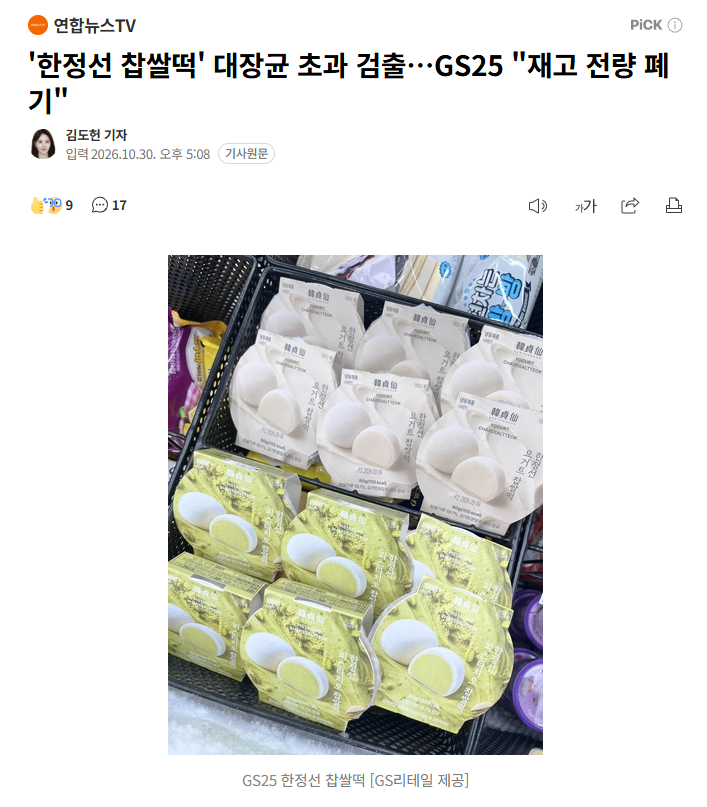
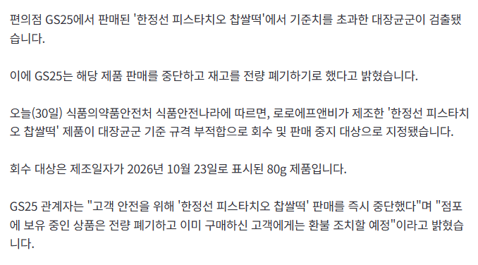

🪖🫡💂🍡💩


노로에프앤비였네
지랄났네
와씨 가게 이름달고 나온게 찐빠났네..
대장균이 흔한가;
흔하긴함 님 몸안에도 졸라 많음
똥에 많음, 똥으로 많든 찹쌀떡임
💩
대장균은 널리고 널렸는데 식품회사에서 대장균이 나왔다는건 그냥 똥싸고 손 안씻는다는 거임 ㅋㅋㅋㅋ 손도 안씻는 식품회사가 다른게 깨끗하겠냐? 절대 아니라는거임. 어지간해선 대장균 검출 이슈가 안생기거든ㅋㅋ

ㅋㅋㅋㅋㅋㅋㅋㅋㅋㅋㅋ아 웃겨 ㅋㅋㅋ
대장균을 식품 위생검사에서 쓰는 이유는
대장균은 거의 사람 및 동물의 장에 살고 대변에서 검출되는데
그렇지만 자연 환경에 노출되면 쉽게 죽는다는 특성이 있음
대신 실험실적 환경에서 배양은 용이함
식품에서 나온다? = 똥묻었다는 얘기
ㄹㅇ 걍 진짜 그런거야?ㅋㅋㅋ
ㄴㄴ 저기서 말하는건 대장균군임 기자가 기사제목 잘못 쓴거임 대장균군안에 대장균이 포함인데 대장균군은 똥말고도 검출잘됨
멸균이나 살균한 식품 제외하면 우리가 먹는 음식 대부분 대장균군이 존재할거임 물론 중간과정에서 청결하지 못한 부분이 존재하면 저런식으로 많이 나오기도 하고
하지만 굴에서 나온 다면 똥이지??
분변오염지표 라고 생각하면 편함
소장균이었으면
원균이었으면
똥! ㅋㅋ
손해가 크겠구만..
예에?
안먹어
해병 찹쌀떡 ㅋㅋㅋㅋㅋ
별이 다섯개!
팥이 아니라 똥을 넣어줬네

로로에프엔비? 기억하겠습니다
저거 대리점에 납품된 떡도, 소비자한테는 보냉팩 따로 돈주고 사서 가져가라고 팔아놓고.
정작 자기들은 냉장차 말고 실온차로 배송받아서 뉴스나온 떡집 아니냐?
https://www.youtube.com/watch?v=C6bla1nickg
취재가 시작되자 냉장차(더비쌈)로 배송하기 시작함.
이건 한정선 이름만 달고 나온거라 상관없을걸?
Gs는 왜 맨날 대장균이 검출되는거야? 이새끼들 무슨 우유에 똥나오고 김밥에 똥나오고 떡에 똥나오고 빵에 똥나오고
아예 똥으로 음식을 만드는 수준같은데?
https://www.hani.co.kr/arti/economy/consumer/1051072.html
https://kpinews.kr/newsView/1065595367126611
https://www.yna.co.kr/view/AKR20231031023700017
https://www.kukinews.com/article/view/kuk202609140010
린도린도 린도사람들이 기깔나게 말아주나봐
똥 ㅋㅋ
대장균군도 아니고 대장균이야? 관리를 어찌하기에.. 절대 안먹어야겠다
뿌다다닷
해병 찹쌀떡